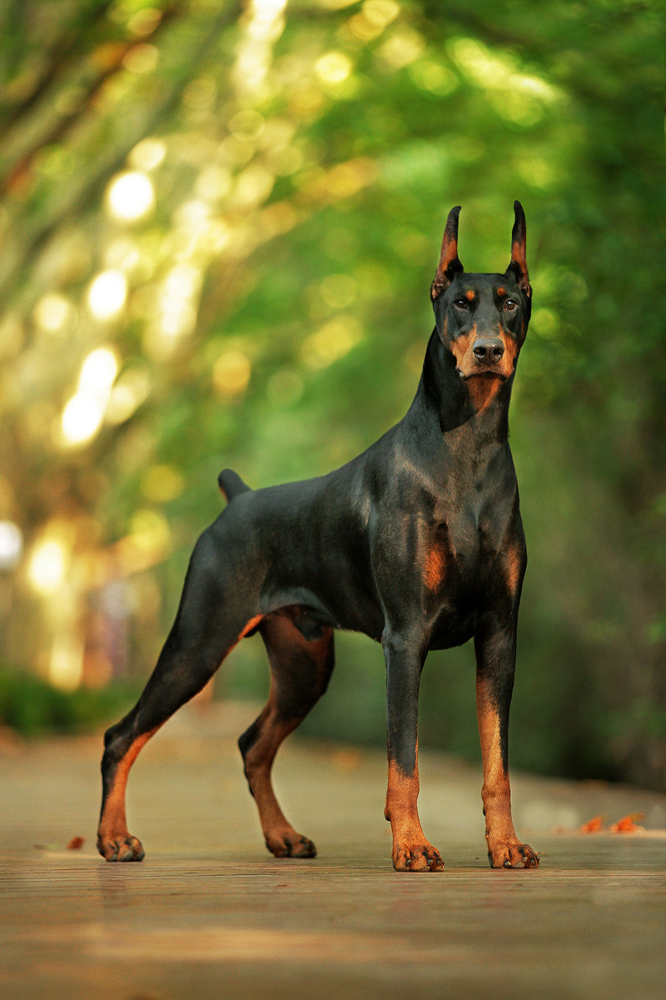

Proper Nutrition for Doberman...
High quality foods that are easily digestible and palatable are required for Dobermans.You should be picking food appropriate for your dogs age. To get a shiny coat add fatty acids such as flaxseed or safflower oils into your Dobermans diet. The more active your Doberman is, the more you should feed them.
